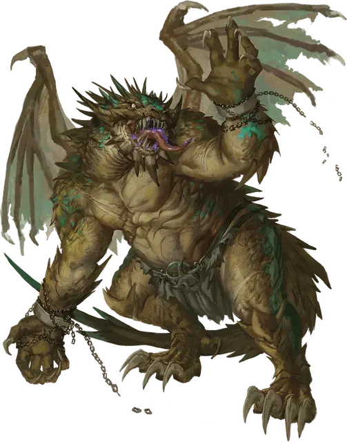

Трааг Драконид
Traag Draconian
Большой Монстр, хаотично-злой

Класс Доспеха 14 (природный доспех)
Хиты 68 (8к10 + 24)
Скорость 40 футов
| мод | спас | ||
|---|---|---|---|
| СИЛ | 21 | +5 | +8 |
| ЛОВ | 10 | +0 | +0 |
| ТЕЛ | 17 | +3 | +6 |
| мод | спас | ||
|---|---|---|---|
| ИНТ | 6 | −2 | −2 |
| МДР | 8 | −1 | −1 |
| ХАР | 9 | −1 | −1 |
Иммунитет к состояниям испуг, очарование
Чувства тёмное зрение 60 футов, пассивное Восприятие 9
Языки Общий, Драконий
Опасность 5 (1800 опыта)
Бонус мастерства +3
Особенности
Кровавое бешенство. Драконид совершает с преимуществом броски рукопашных атак против любого существа, у которого меньше максимума хитов.
Контролируемое падение. Если драконид падает и не недееспособен, то при расчете урона от падения он вычитает до 50 футов от падения.
Смертельная агония. Если количество хитов драконида уменьшается до 0, его тело извергается в осадок, заполняющий сферу радиусом 10 футов. Каждое существо в этой области должно совершить спасбросок Ловкости Сл 14 или покрыться илом на 1 минуту. Пока существо покрыто илом, его скорость снижается вдвое. Существо может использовать свое действие, чтобы соскрести осадок с себя или другого существа в радиусе 5 футов от себя.
Действия
Мультиатака. Драконид наносит две атаки когтями.
Коготь. Рукопашная атака оружием: +8 к попаданию, досягаемость 10 футов, одна цель. Попадание: 14 (2к8 + 5) рубящего урона.
Пламенная резня (перезарядка 5-6). Драконид потворствует своей ярости, окутывая себя огнем и передвигаясь на свою скорость. Во время этого движения драконид может входить в пространство существ. Во время этого движения, когда драконид входит в пространство существа, существо должно совершить спасбросок ловкости Сл 14. При провале, существо получает 22 (4к10) урона огнём и падает ничком. При успехе существо получает половину урона и отбрасывается в ближайшее пространство вне пути драконида. Существо может быть поражено огненной резней этого драконида только один раз за ход.
Реакции
Жестокое возмездие. Если существо в пределах 10 футов от драконида попадает по нему атакой, драконид может совершить одну атаку когтями против этого существа. Если атака когтями попадает, она наносит дополнительные 4 (1к8) рубящего урона.
Описание
Экспериментируя с развращением драконьих яиц, Драконьи армии создали драконидов Траагов - предшественников тех, кто впоследствии станет пешими солдатами драконов Бааза. В отличие от своих собратьев-драконов, Траагские дракониды - не более чем кровожадные двигатели резни. Лишь немногие командиры успешно используют безрассудную жестокость Трааг драконидов в своих интересах в бою; для большинства Трааг-дракониды представляют такую же опасность для своих союзников, как и для врагов. Даже магия не может укротить жажду насилия драконида Траага.
Рудиментарные крылья драконида Траага не обладают достаточной силой, чтобы поддерживать его громадное тело в полете, и лишь в минимальной степени помогают замедлить падение Траага. Металлическая чешуя покрыта тошнотворным налетом. В бою драконид может заряжать свое тело злобным огнём, сжигая все на своем пути. Когда драконид Трааг умирает, его тело взрывается в густой, отвратительный осадок.